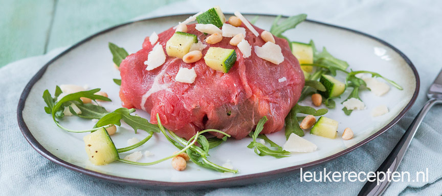

Carpaccio bonbons met courgette
Deze bol van carpaccio is een feestje om uit te pakken en is gevuld met o.a. courgette en gedroogde tomaat.
Ingrediënten
- ½ courgette
- 200 gr tot 250 gr carpaccio
- handje rucola
- 8 gedroogde tomaatjes
- peper en zout
- 2 eetlepels parmezaanse kaas
- 2 eetlepels pijnboompitten (geroosterd)
- Optioneel: truffel of citroen mayonaise
Bereidingswijze
- Snijd de courgette in kleine blokjes. Bak deze kort aan in een pan en breng ze op smaak met wat peper en zout.
- Leg 4 of 5 plakken carpaccio iets over elkaar op een snijplank of bord. Leg wat rucola in het midden. Schep wat courgette er op. Snijd de tomaatjes in kleine stukjes en voeg ook toe.
- Bestrooi met een beetje parmezaanse kaas en wat pijnboompitten.
- Vouw de carpaccio naar binnen en zorg dat hij helemaal dicht is en draai hem om zodat er bol/bonbon ontstaat.
- Leg deze op een beetje rucola en garneer met wat courgette, kaas en pijnboompitten. Druppel er eventueel wat truffel of citroen mayonaise over.

Tip! Maximaal 2 uur te bewaren in de koelkast.